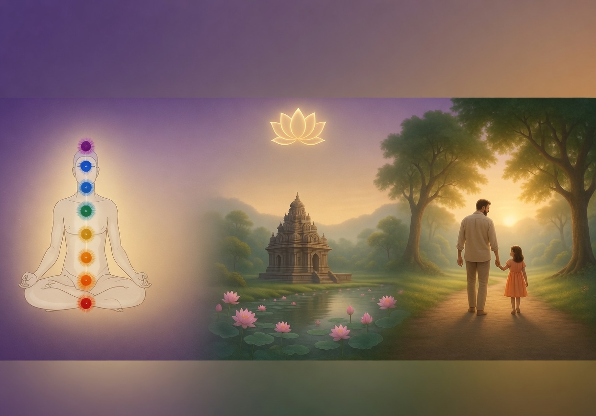

Pure food for clarity, compassion and balance
SAATVIK BHOJAN
Through the conscious adoption of Saatvik Bhojan, we nourish the body, calm the mind, and uplift the soul through pure, wholesome and spiritually supportive food.
Fresh, natural, clean ingredients prepared with love and mindfulness.
FOOD WITH INTENTION
Saatvik food is not merely about eating. It is a Vedic discipline that supports clarity, compassion, health and inner peace.
Moderate, nourishing meals that strengthen without disturbing the mind.
WHAT TO INCLUDE
Light, naturally sweet and energizing.
Seasonal, colorful and full of vitality.
Grounding nourishment for steady energy.
Used responsibly, respectfully and consciously.
Strength, warmth and wholesome nutrition.
Gentle support for digestion and balance.
DAILY RHYTHM
Begin light with fruit, warm water, gratitude or prayer.
Take the main meal when digestion is strongest and mind is alert.
Keep dinner simple, warm and easy to digest.
“When food is pure, the mind becomes calm and the heart becomes clear.”

Gau Seva, Ahimsa and Respect for All Life
→
Sattvic Food for a Healthy Body & Mind
→
Yoga, Meditation and Inner Balance
→
Jnana, Reflection and Conscious Education
→
Clarity, Vitality, Inner Peace and Harmony
→